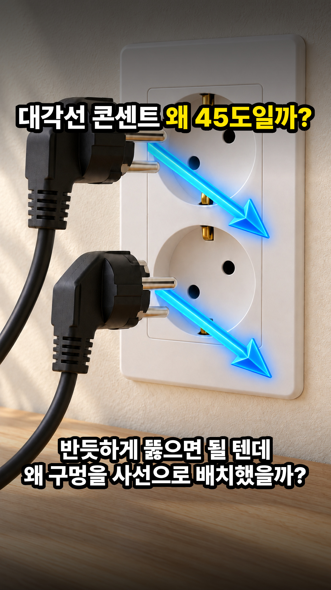

굳이 알아야 할까? EP86 신규 제작방식 완성본 검수
일부 콘센트와 멀티탭은 구멍이 왜 45도로 기울어져 있을까? #쇼츠 (87.37초 · 12컷 3D A→B 인포그래픽 · 1.22배속 · 10% 다이나믹 줌인)
🎬 EP86 마스터 영상 (87.37초 · 1.22배속 + 10% 줌인)
• 성우: Eungwang 1.0x 원음 + 0.16s 무음 압축 + 1.22x 배속
• 비주얼: 12컷(C01~C12) 3D A→B 인포그래픽 + Google Flow + 10% 줌인
• 게이트: Gate 1~5 전수 통과 (ZERO-DEFECT)
🖼️ 마스터 썸네일 (9:16 & 4:5 세이프존 검증)

주소를 아는 사람은 열람할 수 있는 페이지입니다 · 2026-11-23 이후 자동 삭제